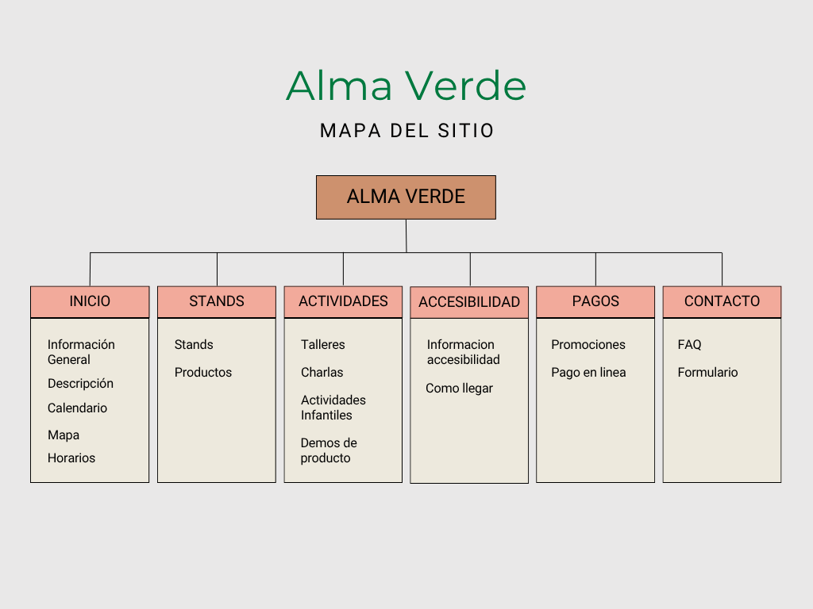

Texto introductorio
Actividad principal de la organización
Alma Verde es una organización sin fines de lucro dedicada a la conservación del medio ambiente y la promoción de prácticas sostenibles.
Objetivos del sitio web
El sitio web de Alma Verde tiene como objetivo principal informar y educar al público sobre acciones ecológicas, además de facilitar la participación en iniciativas verdes.
Concepto general y estrategias de atracción
El concepto general del sitio web es ser un recurso accesible y atractivo para el público general, usando un diseño amigable y contenido relevante para generar conciencia ambiental.
Análisis del público objetivo
Nuestro público objetivo incluye personas de todas las edades interesadas en la conservación del medio ambiente, desde estudiantes hasta profesionales y familias.
Identidad visual inicial
Paleta de colores, tipografía, íconos, estilo gráfico
- Colores: Verde (#4CAF50), Beige (#F5F5DC), Blanco (#FFFFFF), con acentos en marrón claro o celeste.
- Tipografía: 'Montserrat', sans-serif. - Logo: 'Montserrat', sans-serif.
- Íconos:

Logo preliminar:
 Alma Verde
Alma Verde
Logo final:
 Alma Verde
Alma Verde
Mapa del sitio
Prototipo
Ver prototipo en Figma
Roles de los Integrantes
Diseñador UX/UI:
Pedro Vazquez
Maquetador:
Alejandro Martinez
Barbara Coutinho
Programador:
Juan Oviedo Runzio
Comunicador Web:
Francisco Prividera
Descripción de tareas
Pedro: Diseño de la página y desarrollo en Figma.
Alejandro: Maquetado del protecto y agregado de SweetAlerts.
Barbara: Maquetado y desarrollo del home y avances.
Juan: Desarrollo de la parte de back-end.
Francisco: Maquetado en el home y en la sección de avances.